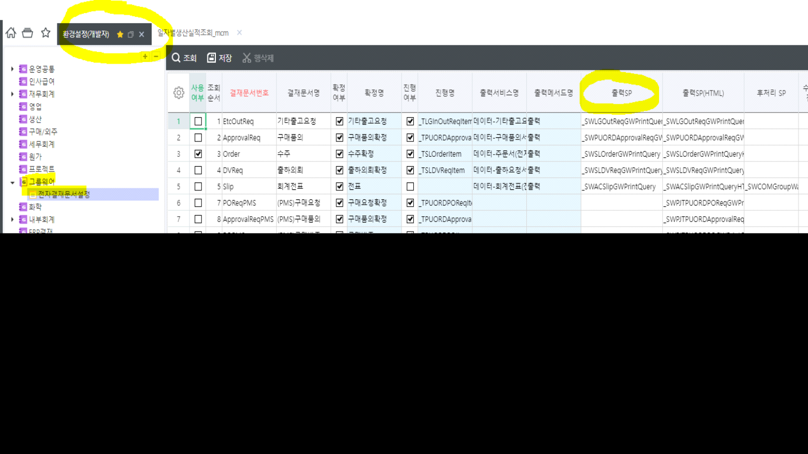

전자결재
환경설정(개발자) - 그룹웨어 - 전자결재문서설정
전자결재의 경우 select sp만 제공하면 연동업체에서 출력물 양식을 만들어주는 느낌
=> 우리는 sp 만 만들면 된다
ex. a 컬럼 추가해주세요 => sp 신규로 만든 후, 출력sp에 반영하면 끝

환경설정(개발자) - 그룹웨어 - 전자결재문서설정
전자결재의 경우 select sp만 제공하면 연동업체에서 출력물 양식을 만들어주는 느낌
=> 우리는 sp 만 만들면 된다
ex. a 컬럼 추가해주세요 => sp 신규로 만든 후, 출력sp에 반영하면 끝
